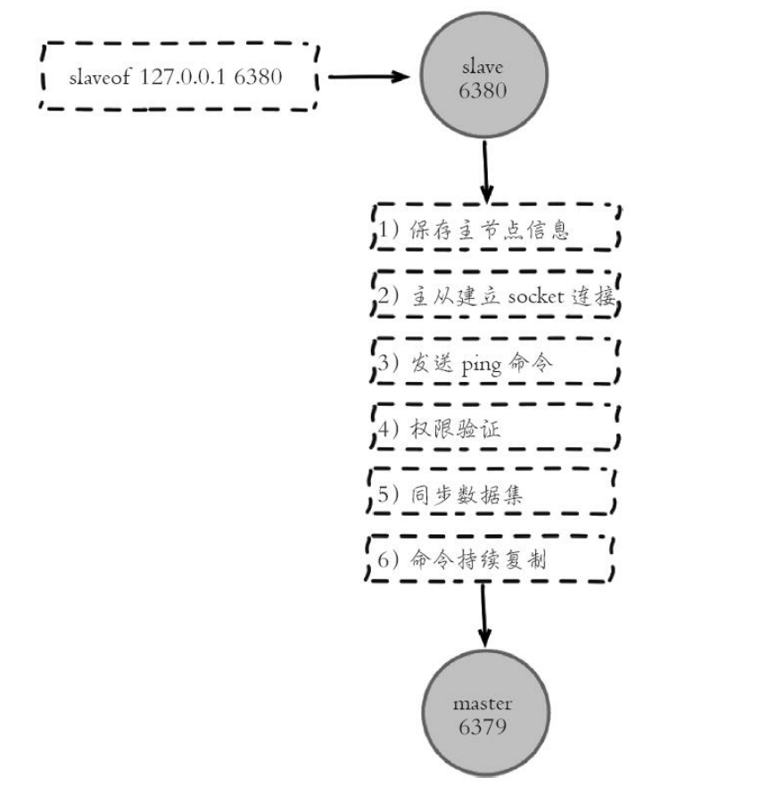

Redis+Docker
1.docker环境+redis主从
- 1）Dockerfile
- FROM centos:latest
- RUN groupadd -r redis && useradd -r -g redis redis
- RUN yum -y update && yum -y install epel-release && yum -y install redis && yum -y install net-tools
- EXPOSE 6379
- 2）创建网络
- docker network create --subnet=172.10.0.0/16 mynetwork
- 3）添加节点
- 主节点：docker run -itd --name redis-master --net mynetwork -p 6380:6379 --ip 172.10.0.2 redis
- 从节点：docker run -itd --name redis-slave --net mynetwork -p 6381:6379 --ip 172.10.0.3 redis
- 注意ip段，就可以在一台电脑上组建小局域网
- 4）配置从节点conf文件
- slaveof <主节点ip> <主节点端口号>
- 5）主从都启动后，主节点添加，从节点查看
- 6）-v /宿主机目录:/容器内部目录，共享目录
2.主从复制原理

- 1）保存主节点信息
- 2）从节点内部通过每秒运行的定时任务维护复制相关逻辑
- 建立socket
- 链接失败重试
- 3）发送ping指令
- 检测连接可用
- 是否可授受处理命令
- 4）权限验证：验证masterauth与主节点相同的密码
- 5）同步数据集：核心处理
- 6）命令持续复制：不是强一致性
3.复制偏移量：info replication查看slave_repl_offset
4.全量复制过程

- 1）redis内部发送全量发送命令，要求master主机同步数据
- 2）向从机发送runid和offset，从机没有offset所以全量
- 3）从机slave保存主机的基本信息
- 4）主节点收到全量复制命令后，执行bgsave（异步执行），后台生成rdb文件（快照），并使用一个缓冲区（复制缓冲区）记录从现在开始执行的所有命令
- 5）主机send RDB发送RDB文件给从机
- 6）发送缓冲区数据
- 7）刷新旧数据，从节点在载入主节点的数据前要清除老数据
- 8）加载RDB文件将数据库状态更新至主节点执行bgsave时的数据库状态
5.全量复制开销，主要有以下几项
- bgsave 时间
- RDB 文件网络传输时间
- 从节点清空数据的时间
- 从节点加载 RDB 的时间
- 使用debug reload重启可以不改变runid
6.部分复制
- 1）如果网络抖动
- 2）主机master还是会写replbackbuffer（复制缓冲区）
- 3）从机slave继续尝试连接主机
- 4）从机把自己当前runid和offset传给主机并执行pysnc命令同步
- 5）如果master发现offset是在缓冲区范围内，就返回continue命令
- 6）同步了offset的部分数据，所以部分复制的基础就是offset
7.redis如何决定是全量还是部分
- 根据offset和缓冲区大小决定是否部分复制
- 如果offset之后的数据，仍然在复制积压缓冲区，则部分复制
- 如果不在复制积压缓冲区，则全量
- 复制积压缓冲区大小：配置reel-backlog-size
8.Linux tc工具，模拟网络延迟
9.主节点不安全情况下的不写入配置
- min-slaves-to-write，不满足指定数量的从节点不写入
- min-slaves-max-lag，不满足指定延迟不写入
10.哨兵配置
- 1）redis-sentinel.conf
- 2）sentinel monitor mymaster IP 端口
- 3）redid-sentinel /etc/redis-sentinel.conf，启动
11.哨兵注意所有节点配置
- 1）bind 0.0.0.0，注意绑定的ip，线上要指定好
- 2）protected mode=no
12.哨兵在客户端需要连接哨兵服务器
13.docker编排工具：docker-compose
14.redis-cluster
- 配置文件打开enable-cluster
- /var/lib/redis/redis-{port}.conf文件中有节点id，使用cluster nodes查看
- 握手：由客户端发起，cluster meet 节点 端口（注意节点要打开端口，防火墙），虚拟机上用的客户机商品映射，使用的外网ip，如：cluster meet 192.168.56.102 6391
- 从节点上设置：CLUSTER REPLICATE 主节点nodeid（cluster nodes里取到的），设置主从备份，如：redis-cli -p 6396 CLUSTER REPLICATE 56767ba29dbee2f362b44a3c0cb2092951738d01
- 添加槽点，如三台分配：
- redis-cli -p 6391 cluster addslots {0..5461}
- redis-cli -p 6392 cluster addslots {5462..10922}
- redis-cli -p 6393 cluster addslots {10923..16383}
- 测试：
- redis-cli -c -p 6394 set aaa 111
- redis-cli -c -p 6394 get aaa
- 具体文档视频06
15.快速构建集群，使用redis-trib.rb，不需要再手动握手并分配槽点了
Nginx
1.Web服务器方式：
- 1）多进程方式：当有大量请求时，会导致系统性能下降
- 2）多线程方式：开销小于进程，共享内存，稳定性问题，一个进程挂掉所有线程挂掉
2.pcntl，PHP进程控制
3.eventloop实现io复用
- EventBase类
- Event类
4.PHP即时通讯框架Workerman
5.ngx_http_access_module：限制允许ip进行访问
6.淘宝nginx文档：http://tengine.taobao.org/nginx_docs/cn/docs/
7.USR1信号：重新打开日志文件
8.限流（漏桶算法）：
- limit_req_zone
- limit_conn：设置允许一个IP同时的连接数
9.ngx_http_map_module：创建一些和另外变量相关联的变量，可以做ip白名单配合geo.conf文件
10.proxy模块：用于将请求抛给其他服务器节点（或应用）或upstream服务器池
11.动态伸缩：consul、nginx-upsync-module
项目
1.